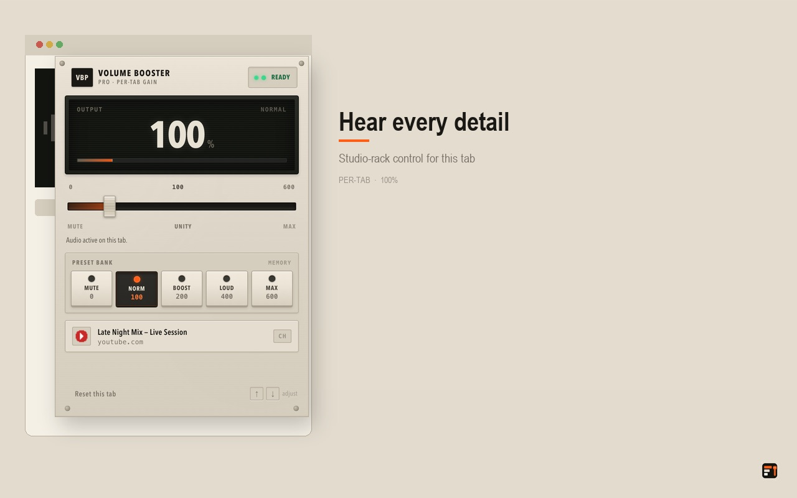

Chrome Extension · Web Audio
Volume Booster Pro
Per-tab volume control up to 600% for Chrome, with a compact popup and clear status feedback.
Overview
Volume Booster Pro is a Manifest V3 Chrome extension that routes a page’s <audio> and <video> elements through a Web Audio GainNode, letting you set each tab anywhere from 0% to 600%. The content script stays idle until you actually change the volume, and the extension makes no analytics or network calls.
Highlights
- 0%–600% gain per tab, stored locally in
chrome.storage.localand cleared when the tab closes. - One-click presets: Mute, Normal 100%, Boost 200%, Loud 400% and Max 600%, plus arrow-key adjustment in 5% steps.
- A status pill reports Ready, waiting for a gesture, no media, unavailable or error, and a warning appears above 300% where clipping becomes likely.
- Works across iframes: the popup enumerates every frame on the tab and each frame builds its own audio graph.
- Lightweight idle path — no polling and no
AudioContextcreated until the first volume change. - No analytics, remote code or network calls; volume preferences never leave the device.
Stack
